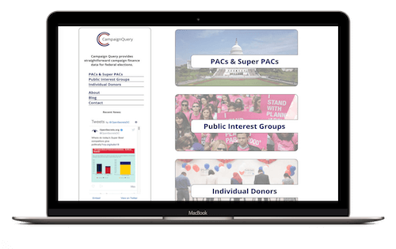

Projects

Campaign Query
Focused on campaign finance data, this project utilizes Amcharts in conjuction with the Federal Election Commission API to display meaningful finance data in a clean, streamlined manner.

appDoption
A front-end, photos focused application for searching adoptable pets in your area. This application was created with the usability of Instagram in mind and connects with the Petfinder API.

Virtual Hostel
Built using React, this project allows the user to post reviews of travel experiences and view others reviews and suggested itineraries. User authentication is provided using Passport.js.